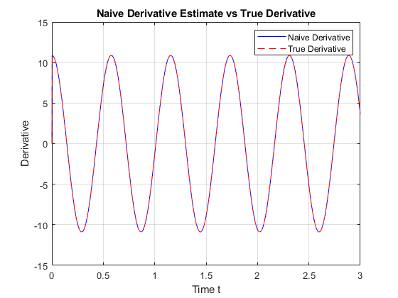

% Load the data load('DataHW06_Prob2.mat'); % Assume t and y are loaded, along with dy (the true derivative) % Look at the variables in the workspace after loading % whos % Compute the time step ∆T deltaT = t(2) - t(1); % Compute the naive derivative using the difference formula % Shift y by one index to represent y(t - ∆T) y_shifted = [y(1); y(1:end-1)]; % Ensure causal computation naive_derivative = (y - y_shifted) / deltaT; % Plot the naive derivative estimate figure; plot(t, naive_derivative, 'b', 'DisplayName', 'Naive Derivative'); hold on; % Plot the true derivative from the data file plot(t, dy, 'r--', 'DisplayName', 'True Derivative'); % Add labels and legends xlabel('Time t'); ylabel('Derivative'); title('Naive Derivative Estimate vs True Derivative'); legend show; grid on; hold off;